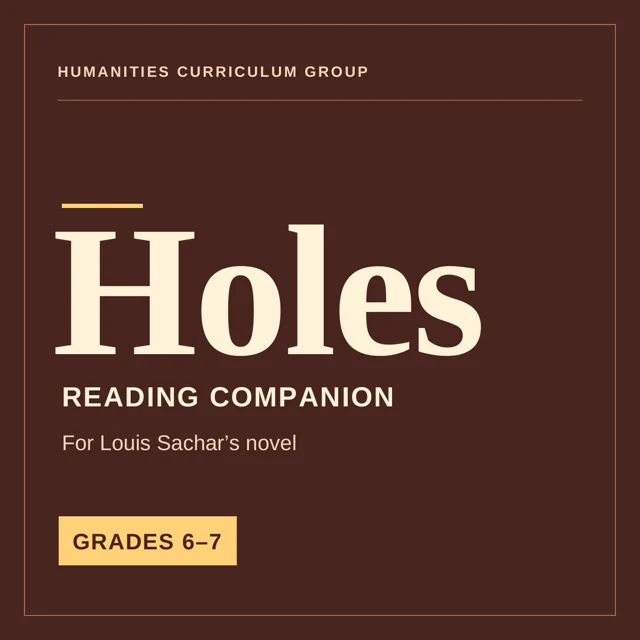
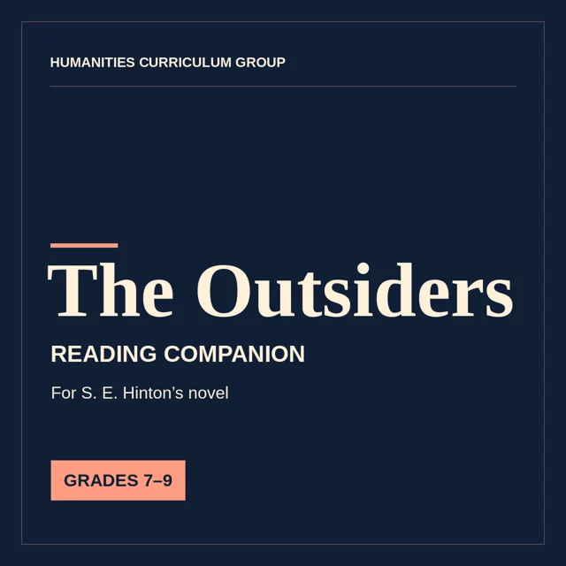

Grades 6–8
The Giver
Track how rules, language, and memories shape Jonas’s choices.

Teaching guides for novels and memoirs, with reading questions, pacing plans, and teacher notes. Students use their own copies of the books.
These companions are separate from the U.S. History subscription. Purchases aren’t open on this site yet.
Grades 6–8
Track how rules, language, and memories shape Jonas’s choices.

Grades 6–7
Connect the camp, the family stories, and the earlier Green Lake scenes.

Grades 7–9
Examine how Ponyboy’s point of view shapes what readers learn about loyalty and class.
Grades 6–8
Follow two timelines and compare how the characters respond to disruptions in daily life.
Grades 8–10
Trace how leaders change rules and use language to hold power.
Grades 6–7
Study Bud’s voice and the clues he uses to make sense of the people he meets.
Grades 3–5
Trace how Charlotte’s choices change what others see in Wilbur.
Grades 6–7
Trace Esperanza’s changing ideas about work, family, and belonging.
Grades 9–12
Follow recurring images and examine how characters respond to censorship.
Grades 6–7
Track how Brian’s decisions change as he learns to survive.
Grades 9–12
Track changes in group rules, leadership, and symbols.
Grades 9–12
Read Wiesel’s memoir with attention to testimony, historical context, and authorial choices.
Grades 9–11
Study how dialogue, setting, and repeated images develop the characters’ hopes.
Grades 6–8
Compare three timelines and the choices characters make while seeking safety.
Grades 10–12
Examine Nick’s narration and trace how setting and symbols shape the novel’s ideas about wealth.
Grades 7–10
Examine how Katniss responds to spectacle, surveillance, and competing loyalties.
Grades 6–8
Trace Percy’s choices and compare how the novel adapts familiar myths.
Grades 8–11
Study Scout’s point of view and the gap between what she sees and what readers infer.
Grades 6–7
Compare narrators’ accounts of shared events.
No companions match this grade.